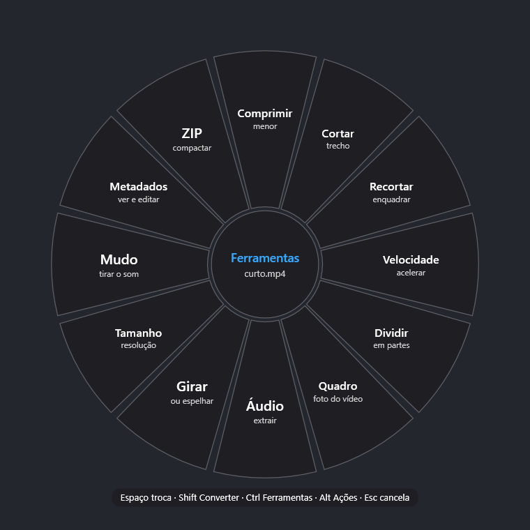

Arraste.
Aperte Espaço.
Transforme.
Converta e edite fotos, vídeos, áudio e PDF, direto no Windows.
Grátis. Código aberto. Windows 10 e 11.
Seu sistema está com as animações reduzidas.
Do arrastar ao pronto
- Espaço
Arraste
Arraste um ou mais arquivos e, sem soltar o mouse, aperte Espaço.
- Shift, Ctrl, Alt
Escolha o lado
Espaço de novo, ou Shift, Ctrl e Alt trocam entre Converter, Ferramentas e Ações.
- Setas, Enter
Solte
Solte o arquivo em cima da opção, ou use as setas e Enter.
Pronto
O resultado fica salvo ao lado do original, que nunca é alterado.
A roda muda com o arquivo
Aperte Ctrl com a roda aberta. As ferramentas se adaptam ao tipo de arquivo: foto de um lado, vídeo do outro.
Ferramentas para foto
Ferramentas para vídeo

De fotos a planilhas
Imagens
JPG, PNG, WebP, HEIC, AVIF, RAW de câmera, PSD e mais.
Foto do iPhone em HEIC para JPG, pronta para compartilhar.
Vídeo
MP4, MOV, MKV, WebM, AVI e GIF animado.
Vídeo MOV para MP4. Ou extraia só o áudio em MP3.
Áudio
MP3, M4A, WAV, FLAC, OGG, Opus e AIFF.
Gravação em WAV para MP3, ocupando menos espaço.
Documentos e apresentações
Word, PowerPoint, HWP, ODT e RTF.
DOCX para PDF. Apresentação PPTX para imagens PNG.
PDF
Para Word, Excel, PowerPoint, imagem e de volta.
PDF para DOCX para continuar editando. Ou uma imagem por página.
Compactados
ZIP, 7Z e TAR; também abre RAR e ISO.
Reúna vários arquivos num ZIP ou extraia um arquivo RAR.
Planilhas
XLSX, XLS, ODS, CSV, TSV e PDF.
Planilha XLSX para CSV, pronta para importar em outro sistema.
Texto e e-books
Markdown, TXT, HTML, EPUB, DOCX e PDF.
Notas em Markdown para PDF. Livro EPUB para texto.
Legendas
SRT, VTT e TXT.
SRT para VTT para usar a legenda na web.
Tudo acontece dentro do seu computador, nunca na nuvem de alguém.
Sem assinatura, sem conta
Código aberto sob licença MIT, para Windows 10 e 11 (64 bits). Suporta 13 idiomas.